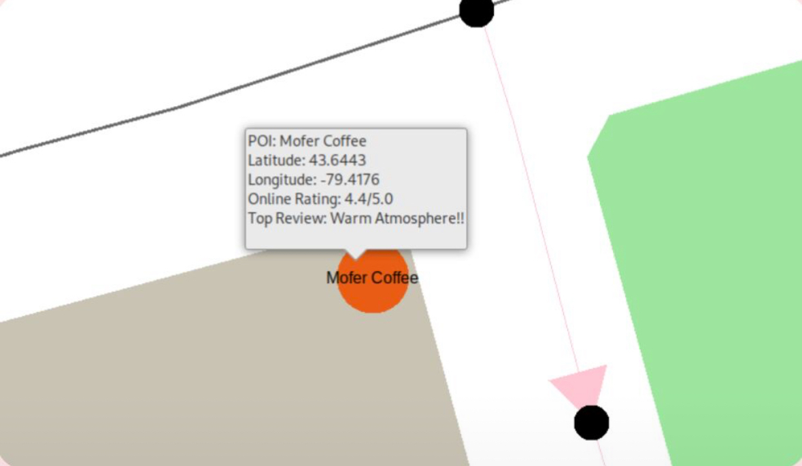
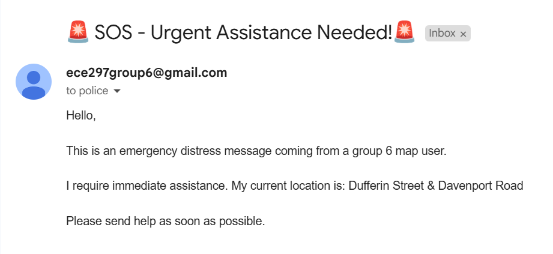

SafeRoute: A Safety-First Navigation System
As part of a three-person team, I co-developed SafeRoute, a safety-first navigation platform aimed at empowering safer campus movement—especially for women. Built using C++ and a custom graphics engine, SafeRoute integrates OpenStreetMap data with advanced pathfinding algorithms like Dijkstra’s, A*, and Simulated Annealing to deliver fast and intelligent routing.
 The platform includes features such as POI safety ratings using the Google Places API, a dynamic distance scale, and subway lines with color-coded mapping from OpenStreetMap data. It also supports dark mode and ensures WCAG-compliant accessibility, verified using Pa11y. We emphasized performance and responsiveness, achieving pan/zoom speeds under 100ms and a System Usability Score of 91. A collapsible sidebar provides step-by-step instructions for each segment of the journey, ensuring users can navigate confidently and efficiently.
 SafeRoute also includes an emergency location sharing feature designed for rapid response in critical situations. Users can click on their nearest visible intersection on the map, which updates their approximate location. By pressing the SOS button, this location is sent via a POST request (using libcurl) to a designated endpoint that can alert campus security, trusted contacts, or emergency services.